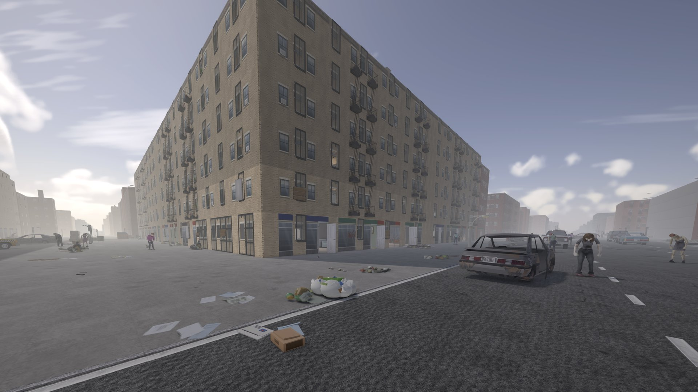
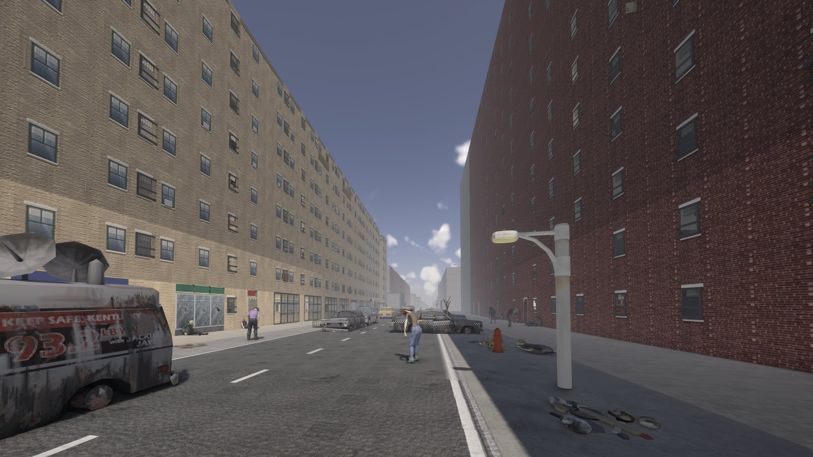
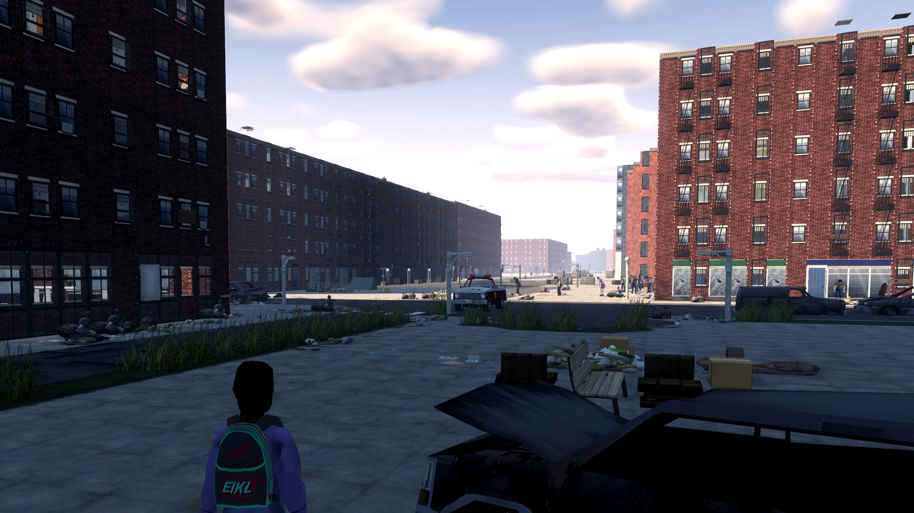
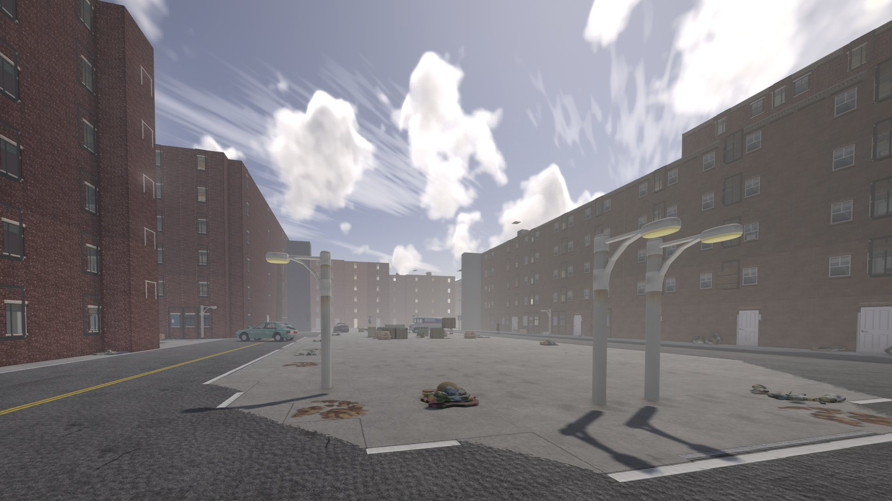
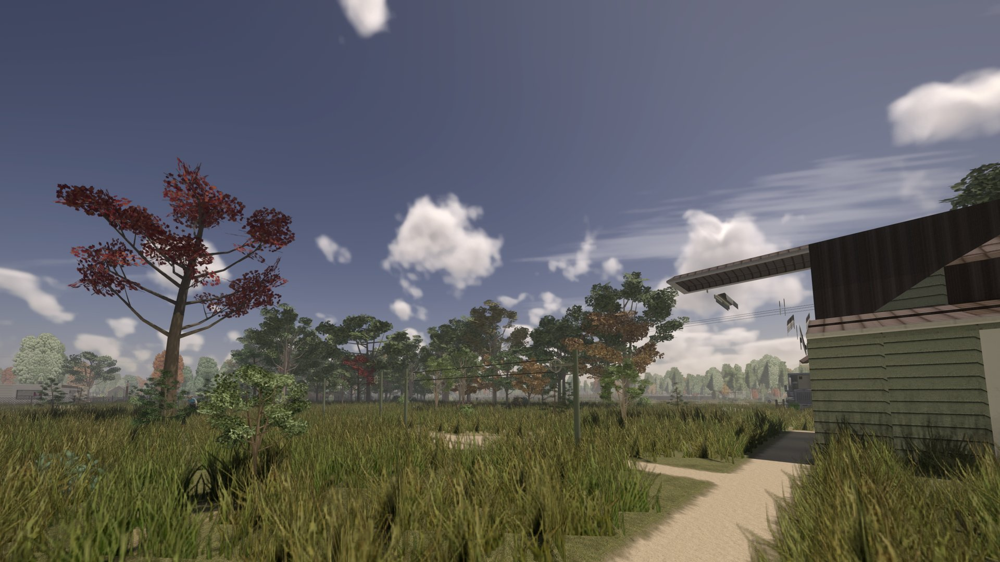
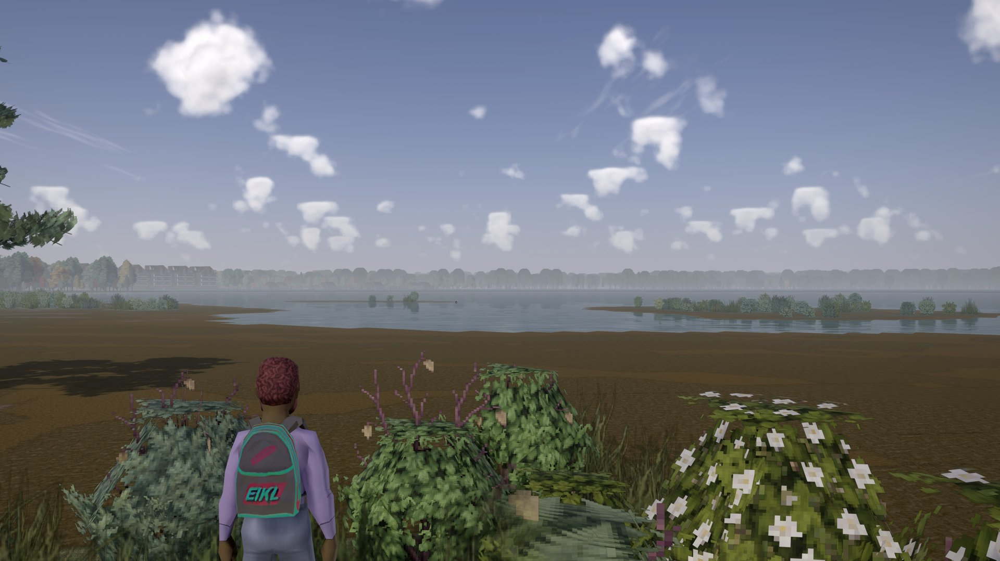
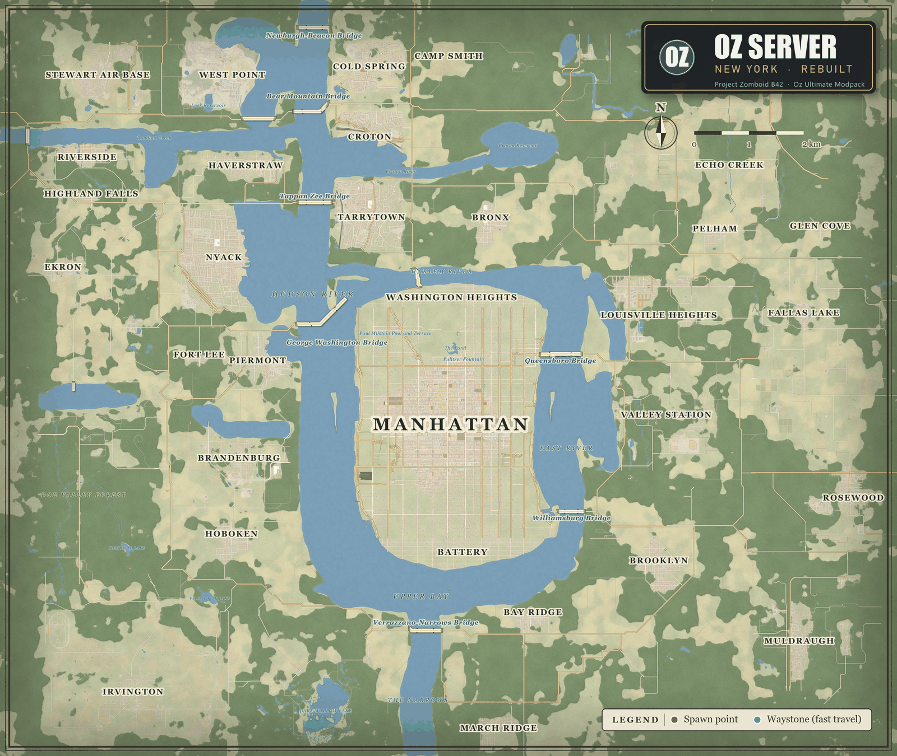

Project Zomboid Build 42, in first person, in a Manhattan rebuilt from real map data: a 15-floor Empire State Building with working elevators, foggy darker downtown weather districts, Hudson Valley towns and Knox County towns with farms and forest between them. New world as of v4. One Steam collection installs everything.
Project Viewpoint: DayZ-style aiming and recoil, true ballistics, lean, prone and vault. HD floors, walls, cars, weapons and clothing, 3D trees, fences and props. Switch to third person or the classic top-down view any time (O).
Midtown Manhattan from OpenStreetMap data: the street grid, avenues and parks, a varied skyline topped by the 15-floor Empire State Building, working elevators, farmland and towns around it.
About 173 curated mods: overhauled weather and lighting, immersive effects, vehicles, rafts and swimming, loot and crafting depth.
Safety toggle, factions, protected safehouses. 20 waystone beacons (with a teleport sound) mark PvP hot zones with supply drops.
/sethome and /home, fast travel between waystones you have found, 37 named spawn districts and towns, in-game rules panel and /help.
New world started Oct 16 afternoon (map 2.5.5); the old world is archived. Build 42.21, 24/7 hosting, backups every 6 hours, active admin, Discord support.
Subscribe to the collection (Subscribe to all), then paste the matching prompt into Claude: the first for Claude Code, the second for the Claude desktop app (needs computer use enabled). It checks your PC, waits for the downloads, adds the server and explains the first join. Oz Modpack 1.0 is 173 mods: Waystones 0.4.3, Server Pack 0.5.37, Fast Boot 1.4.22, Street 3D 1.1.8, HD City Tiles 1.1.7, Server Tweaks 1.2.20, NYC Facades 1.4.0 (the map needs 1.4.0 or later), Division Shaders 0.1.4 (required) and OzNYC World 2.5.2; Unbound Shaders is optional.
The map is bigger in every direction and the world is fresh (Oct 16). Needs Oz NYC Facades 1.4.0 or later (it now carries the Oz Structures tiles); Oz Street 3D 1.1.13 carries their 3D models plus the bridge ramp slopes.
The server is lighter and joins faster: 195 mods down to 173. Duplicates and heavy extras were removed; everything else stays.
What you may notice: skateboards, horses, the tank, the old Marz guns and the vaccine items no longer exist. Do not keep anything you care about in them. The helicopters, scopes, water and 3D props are unchanged.
Unsubscribe from these 19 Workshop items to save disk space (they are no longer used). Do NOT unsubscribe Neat Building (3536052310).
2934985376 Vanilla Open Ammo Walk
3592172476 Take a Bath and Shower
3722134990 Guns of Marz (Old Version)
3456675747 Skateboard
3615135168 Zombie Virus Vaccine and Lab Intern
3774826484 Jumbo Tree Indoor Fix
3695874178 Dynamic Events
3399660368 War Thunder Vehicle Library
3397147307 M1 Abrams
3816588758 Viewpoint Death Cam
3811141563 Viewpoint Source Movement
3811645644 Project Viewpoint Parkour
3661336777 Horse
3813760573 Horse Patch 3D
3811472160 Viewpoint Blood FX
3813801053 Viewpoint Blood FX Addon
3818585720 Viewpoint Binoculars
3814742214 Camera Tweaks Viewpoint
3404791450 Super Bulldozer B42 (not on the server)
208.75.182.159 port 28090. The join PIN is shown on the game's main menu. Pick a username and password for your account and press Connect. If a "Server Workshop Items" list appears, press Install and wait (the HD texture packs are about 1 GB). When ZombieBuddy shows its Java Mod Approval window, tick Allow on the rows that belong to the Oz Server's Workshop mods (the list; Java mods run with full rights on your PC, so leave anything you do not recognise unticked), tick "Save decisions" and press OK.viewpoint-live.properties and drop it into your Zomboid folder with the game closed. That applies our whole Viewpoint graphics setup (DLSS Quality, frame generation off, low latency on, sky on max).python oz_pc_tune.py --dry-run and read the table of current vs recommended values. To apply, run python oz_pc_tune.py (as Administrator to include GPU scheduling) and type YES yourself; it backs up every file it changes and python oz_pc_tune.py --undo restores them. Steam\steamapps\common\ProjectZomboid\ProjectZomboid64.json set -Xmx to 12g (32 GB RAM), 10g (24 GB) or 8g (16 GB; expect stutter, 16 GB PCs will struggle); do not go below 11g on 32 GB because the modded server peaks near 10.5 GB of heap. Windows Settings > System > Display > Graphics: turn on Hardware-accelerated GPU scheduling (reboot) and add ProjectZomboid64.exe with High performance. NVIDIA: with NVIDIA Profile Inspector run nvidiaProfileInspector.exe -silentImport oz_pz_profile.nip (max performance power mode, threaded optimization on). Steam "Verify integrity of game files" resets the json, so redo the heap after it.Advanced (Claude Code, also pre-approves the Java mods and tunes your PC):
Set up Project Zomboid (Build 42) to join the Oz Server on Windows. 1) Open steam://url/CommunityFilePage/3819427155 and have me click Subscribe to all, then wait for Steam to finish downloading. 2) Install ZombieBuddy into my Project Zomboid folder with ZombieBuddyInstaller.exe from https://github.com/zed-0xff/ZombieBuddy/releases (latest), and make sure the Steam launch options contain -agentlib:zbNative -- . 3) With the game closed, add the server to my list: in %USERPROFILE%\Zomboid\db\ServerListSteam.db (back it up first; if it does not exist, have me start the game to the main menu once and quit) run INSERT INTO server(name,ip,port,serverPassword) SELECT 'Oz Server','208.75.182.159',28090,'' WHERE NOT EXISTS (SELECT 1 FROM server WHERE ip='208.75.182.159' AND port=28090). 4) Download https://evrenozdogan.github.io/oz-server/tools/oz_zb_allow_pack.py and https://evrenozdogan.github.io/oz-server/tools/oz_zb_allow_list.json into one folder and read the script. With the game closed, run python oz_zb_allow_pack.py --dry-run and show me its whole table (each Java mod jar with its Workshop item name and what would happen to it). Do not answer its YES question for me: I will run python oz_zb_allow_pack.py myself and type YES only if I agree (it can only pre-approve the Oz Server's own list of Java mods, pinned to reviewed file hashes; anything else is left to ZombieBuddy's own window). 5) Optional performance setup: download https://evrenozdogan.github.io/oz-server/tools/oz_pc_tune.py and https://evrenozdogan.github.io/oz-server/tools/oz_pz_profile.nip into one folder and read the script. With the game closed, run python oz_pc_tune.py --dry-run and show me its whole table (Java heap size for my RAM, Windows GPU scheduling and graphics preference for the game, NVIDIA profile steps, each with current vs recommended). Do not answer its YES question for me: I will run python oz_pc_tune.py myself and type YES only if I agree (it backs up every file it changes and python oz_pc_tune.py --undo restores them). 6) Change nothing else. Then tell me: start the game, Multiplayer, pick Oz Server, choose a username and password, join, click Install on the Workshop list, and if the ZombieBuddy approval window still shows rows, read them and tick Allow only on mods from the Oz Server's Workshop list (an updated Oz mod shows up here again; anything you do not recognise, leave unticked).
Controls: O first person · V aim · Q/E lean · hold crouch = prone · Space vault · Delete graphics. Requirements: Build 42.21, 16 GB RAM, 8 GB+ VRAM (texture compression on below 12 GB), Windows or Linux. macOS and Intel Arc are not supported by Viewpoint.
208.75.182.159:28090
VersionProject Zomboid Build 42.21
ModePvP with safety system · factions · protected safehouses
MapOzNYC World 2.5.5 (Midtown, Hudson Valley, Knox County towns) · Distanciado
ModpackSteam collection
Discorddiscord.gg/v6JMDRYfX8
HostingIndifferent Broccoli server page






Midtown Manhattan in the centre, eight Hudson Valley towns and military sites around it, plus vanilla Knox County towns (Riverside, Muldraugh, Rosewood and more). Downtown districts are foggier and darker, and the military sites and prison have their own gloom. Fast travel between the waystones you have found.

Also: Oz Server Pack · Oz Home · Oz Server Tweaks · OzLook shader pack · Oz Fast Boot · Oz HD City Tiles (HD asphalt, sidewalks, floors and walls) · Oz HD Cars (AI-upscaled vehicle skins, 2048) · Oz HD Gear (HD weapons, body and clothing)